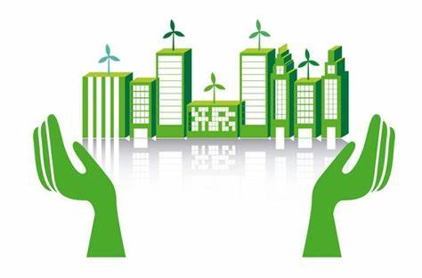

Importancia Del Desarrollo Urbano Sostenible
El desarrollo urbano sostenible es esencial para garantizar un futuro próspero y sostenible para las ciudades. A medida que la población urbana sigue
creciendo a un ritmo acelerado, es fundamental abordar los desafíos socioeconómicos y ambientales que esto conlleva.
Preservación del medio ambiente: Las ciudades sostenibles buscan minimizar su impacto ambiental, promoviendo la conservación de los
recursos naturales, reduciendo las emisiones de gases de efecto invernadero y protegiendo la biodiversidad.
Mejora de la calidad de vida: El desarrollo urbano sostenible busca crear comunidades más equitativas y accesibles, con servicios
básicos de calidad, espacios verdes y oportunidades de empleo.
Resiliencia ante el cambio climático: Las ciudades sostenibles están mejor preparadas para enfrentar los efectos del cambio climático,
como inundaciones o sequías, gracias a la implementación de medidas de mitigación y adaptación.
El desarrollo urbano sostenible es fundamental para construir ciudades más habitables, justas y sostenibles a largo plazo.
Beneficios Del Desarrollo Urbano Sostenible
La implementación del desarrollo urbano sostenible trae consigo una serie de beneficios tanto para las ciudades como para sus habitantes.
Algunos de estos beneficios son:
Mejora de la calidad de vida: Las ciudades sostenibles ofrecen una mejor calidad de vida a sus habitantes, con acceso a servicios básicos,
espacios públicos de calidad, transporte eficiente y viviendas dignas.
Reducción de costos: La adopción de prácticas sostenibles puede ayudar a reducir los costos operativos de las ciudades, como
consumo de energía y agua, así como el manejo de residuos.
Generación de empleo: El desarrollo urbano sostenible impulsa la creación de empleos verdes y sostenibles en sectores como la energía
renovable, la eficiencia energética y la gestión de residuos.
Mejor salud y bienestar: Las ciudades sostenibles promueven estilos de vida activos y saludables, con espacios verdes,
infraestructuras para la actividad física y una menor exposición a la contaminación.
Estrategias Para Lograr El Desarrollo Urbano Sostenible
Promoción de la energía renovable: Las ciudades pueden fomentar el uso de energías renovables, como la solar o la eólica, a través
de incentivos fiscales, la instalación de infraestructuras y la promoción de proyectos de generación de energía limpia.
Fomento del transporte sostenible: Es importante promover el uso del transporte público, la movilidad activa y la implementación
de infraestructuras adecuadas para ciclistas y peatones.
Planificación urbana inteligente: Las ciudades deben adoptar enfoques de planificación urbana que promuevan el desarrollo compacto,
la densificación adecuada y la mezcla de usos de suelo.
Gestión adecuada de los residuos: Las ciudades deben implementar políticas y programas para la gestión adecuada de los residuos,
promoviendo la reducción, el reciclaje y la reutilización.
Desafíos Y Obstáculos En El Desarrollo Urbano Sostenible
Falta de recursos financieros: La implementación de políticas y proyectos sostenibles requiere de inversiones significativas, y muchas
ciudades enfrentan limitaciones presupuestarias para llevarlos a cabo.
Intereses conflictivos: Los diferentes actores involucrados en el desarrollo urbano pueden tener intereses contradictorios, lo que dificulta la
toma de decisiones y la implementación de políticas sostenibles.
Falta de conciencia y participación ciudadana: La falta de conciencia y participación ciudadana puede obstaculizar la implementación de medidas
sostenibles. Es fundamental educar y empoderar a los habitantes de las ciudades para lograr un cambio real.
Complejidad de la planificación urbana: La planificación urbana sostenible es un proceso complejo que requiere la colaboración de múltiples
partes interesadas y la integración de aspectos socioeconómicos, ambientales y culturales.
